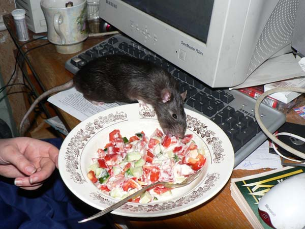
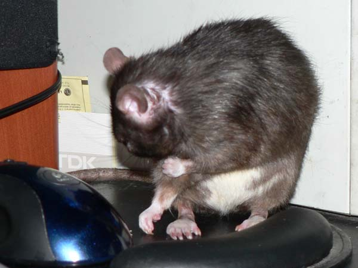
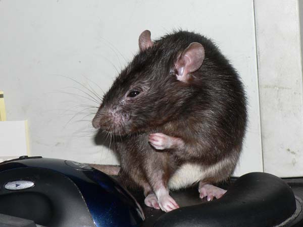
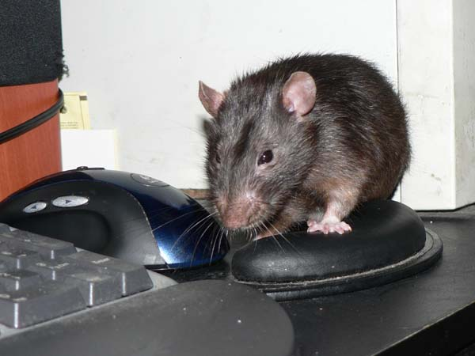
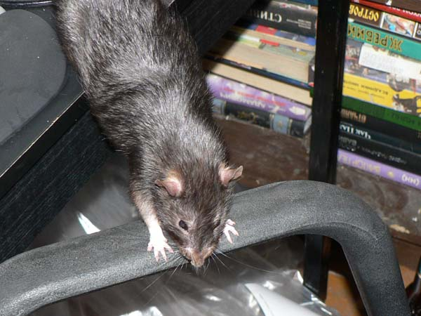
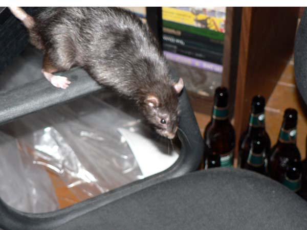
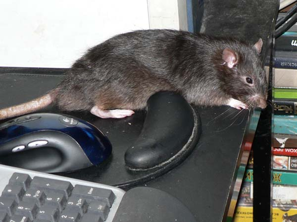
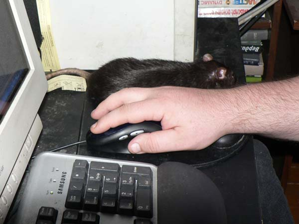

Мулька Шилохвост 24-25 ноября 2005

Дегустатор

— Это мой коврик!

— Ща помогу работать, только рукава засучу...

— Гм... А без меня никто на моем коврике не сидел?

— Кхе-кхе... О чем это я говорил?

— Ща как топну!

— Ну сколько раз повторять: я лучше какой-либо мыши!

— Все, обиделся и пошел гулять!





— Ладно уж, помогу. Вот так — мое присутствие помогает?

— Ты где?

— Вот то-то же. Работай, а я послежу.